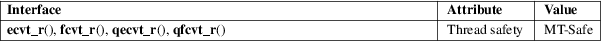

ecvt_r, fcvt_r, qecvt_r, qfcvt_r − convert a floating-point number to a string
Standard C library (libc, −lc)
#include <stdlib.h>
[[deprecated]]
int ecvt_r(double number, int
ndigits,
int *restrict decpt, int *restrict
sign,
char *restrict buf, size_t len);
[[deprecated]] int fcvt_r(double number,
int ndigits,
int *restrict decpt, int *restrict
sign,
char *restrict buf, size_t
len);
[[deprecated]]
int qecvt_r(long double number, int
ndigits,
int *restrict decpt, int *restrict
sign,
char *restrict buf, size_t len);
[[deprecated]] int qfcvt_r(long double number,
int ndigits,
int *restrict decpt, int *restrict
sign,
char *restrict buf, size_t
len);
Feature Test Macro Requirements for glibc (see feature_test_macros(7)):
ecvt_r(),
fcvt_r(), qecvt_r(), qfcvt_r():
/* glibc >= 2.19: */ _DEFAULT_SOURCE
|| /* glibc <= 2.19: */ _SVID_SOURCE || _BSD_SOURCE
The functions ecvt_r(), fcvt_r(), qecvt_r(), and qfcvt_r() are identical to ecvt(3), fcvt(3), qecvt(3), and qfcvt(3), respectively, except that they do not return their result in a static buffer, but instead use the supplied buf of size len. See ecvt(3) and qecvt(3).
These functions return 0 on success, and −1 otherwise.
For an explanation of the terms used in this section, see attributes(7).

GNU.
These functions are obsolete. Instead, sprintf(3) is recommended.
ecvt(3), qecvt(3), sprintf(3)